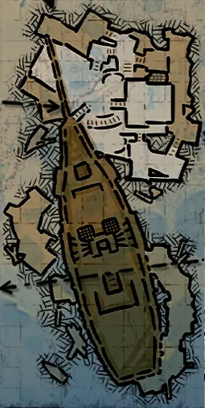
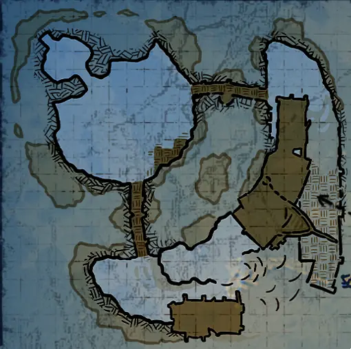
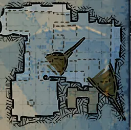
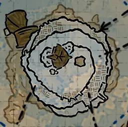
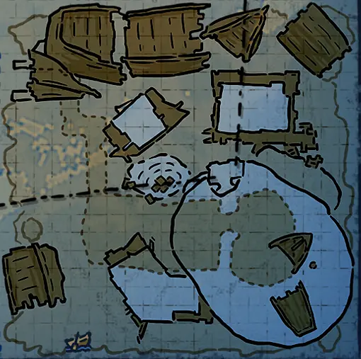
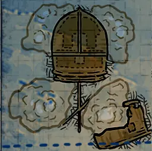

水图
废弃舰船 (AbandonedShip_01)ShipGraveyard_AbandonedShip_01_HR_D.json
ShipGraveyard_AbandonedShip_01.png | 找到 5 个位置 | 自动范围: ±1600

钉手的藏身处 (ShipGraveyard_BladehandRefuge)ShipGraveyard_BladehandRefuge_D.json
ShipGraveyard_BladehandRefuge.png | 找到 1 个位置 | 自动范围: ±1600

象岛 (ElephantIsland)ShipGraveyard_ElephantIsland_HR_D.json
ShipGraveyard_ElephantIsland.png | 找到 2 个位置 | 自动范围: ±1600

1F_14 (1F_14)EmptyModule_1F_14_D.json
EmptyModule_1F_14.png | 找到 1 个位置 | 自动范围: ±1600
倾覆之船 (ShipGraveyard_FlippedShip)ShipGraveyard_FlippedShip_D.json
ShipGraveyard_FlippedShip.png | 找到 3 个位置 | 自动范围: ±1600

水手客栈 (ShipGraveyard_FloatingHouse_01)ShipGraveyard_FloatingHouse_01_D.json
ShipGraveyard_FloatingHouse_01.png | 找到 1 个位置 | 自动范围: ±1600

水上村落 (ShipGraveyard_FloatingVillage)ShipGraveyard_FloatingVillage_D.json
ShipGraveyard_FloatingVillage.png | 找到 1 个位置 | 自动范围: ±1600

海底火山 (ShipGraveyard_Oceanvolcano)ShipGraveyard_Oceanvolcano_D.json
ShipGraveyard_Oceanvolcano.png | 找到 4 个位置 | 自动范围: ±1600

海盗监狱 (PiratePrison)ShipGraveyard_PiratePrison_HR_D.json
ShipGraveyard_PiratePrison.png | 找到 9 个位置 | 自动范围: ±6400

岩岛 (ShipGraveyard_RockIsland)ShipGraveyard_RockIsland_D.json
ShipGraveyard_RockIsland.png | 找到 2 个位置 | 自动范围: ±1600

海洋要塞 A (ShipGraveyard_SeaFortress)ShipGraveyard_SeaFortress_D.json
ShipGraveyard_SeaFortress.png | 找到 1 个位置 | 自动范围: ±1600

骷髅岛 (ShipGraveyard_SkullIsland)ShipGraveyard_SkullIsland_D.json
ShipGraveyard_SkullIsland.png | 找到 1 个位置 | 自动范围: ±1600

沉没之船 (ShipGraveyard_SunkenShip_01)ShipGraveyard_SunkenShip_01_D.json
ShipGraveyard_SunkenShip_01.png | 找到 2 个位置 | 自动范围: ±1600

海沟 (ShipGraveyard_Trench)ShipGraveyard_Trench_D.json
ShipGraveyard_Trench.png | 找到 1 个位置 | 自动范围: ±1600

海底洞穴 A (ShipGraveyard_UnderSeaCave_01)ShipGraveyard_UnderSeaCave_01_D.json
ShipGraveyard_UnderSeaCave_01.png | 找到 2 个位置 | 自动范围: ±1600